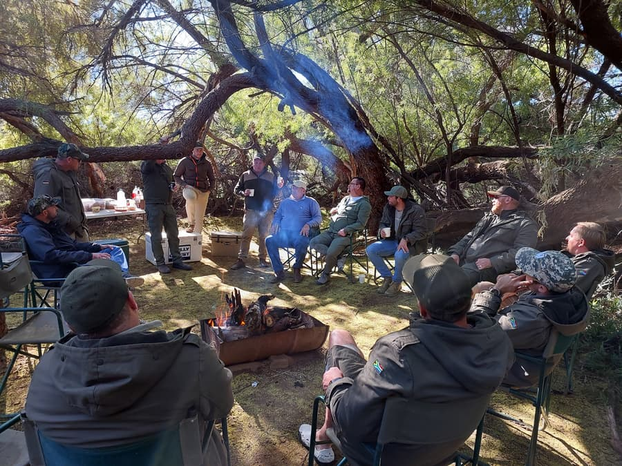
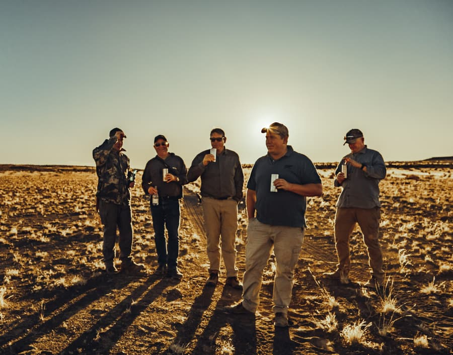
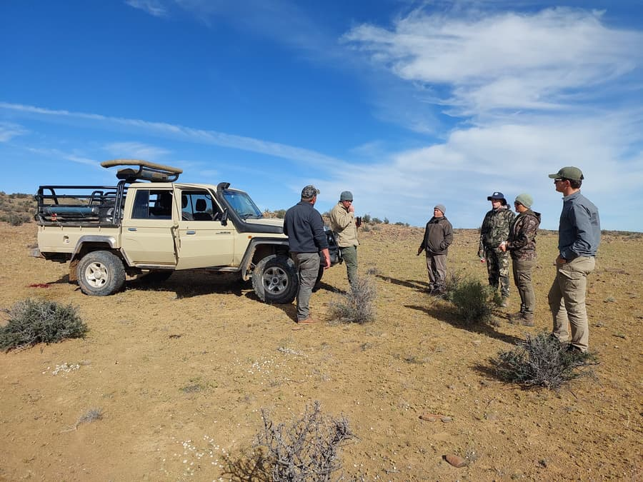

Hunts at Hartsrust Farm
A variety of hunting experiences tailored to suit every hunter's preference — welcoming seasoned marksmen and beginners alike.
Hunting Experiences
Take on long-range hunting, the thrill of walk & stalk, or try voorsit jag for a more traditional approach. Bush walking and waterbank setups offer opportunities to target Waterbucks and Lechwe.
We also offer specialised collections: the Springbuck Slam, featuring all four colour variants, and the Wildebeest Slam, with all three colour variants.

Shooting Range & Equipment
Hone your skills at our on-site shooting range, which offers distances from 100m to 1km. Rifles and shotguns are available for hire.
Processing & Services
- Caping services available (additional charge)
- Taxidermist services offered
- On-site meat processing at R60 per kilogram
- Rifle and shotgun hire
Accommodation & Catering
Our two guest houses, Goodhope and Hartsrust House, provide comfortable accommodation with daily cleaning. Enjoy fully catered lunches in natural settings, and a traditional Karoo breakfast and dinner is available on request for an additional cost.
